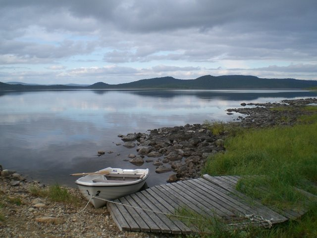

Inari
A legnagyobb, 7700 lakosú község, amely a hasonló nevű tó (Lappföld legnagyobb tava) partján fekszik, a lapp parlament székhelye.
Három lapp kultúra és nyelv találkozik itt: az észak-sami, az inari-sami és a skolt-sami. Ezenkívül azért is fontos hely még Inari, mert sok turista indul innen útnak, vagy tart pihenőt az Északi-sark felé, vagy Norvégiába utazva.
Saariselkän kívül ez az egyetlen olyan hely Lappföldön, ahol "egy helyben" nyaralhatnak a többségükben vitorlázó és horgászvendégek.
Vad és gyönyörű környék, érdemes időt szakítani a megismerésére.
Látnivalók
- Ukonkivi
Régi lapp áldozóhely a tó egyik szigetén. Csónakon odavitethetjük magunkat. A lapp őslakosság szemében szentnek számított az Inari-tó. A szigeten Ukkónak, az időjárás istenének mutattak be egykor áldozatot (ukko = öregember). - Siida Sami Múzeum
A múzeum átfogó és sokrétű tájékoztatással szolgál a lappok, azaz a samik kultúráját és történetét illetően. Összesen 2800 m2-es területén található a Lappföldi Természeti Központ és az Erdőgazdaság Információs Irodája. Itt lehet menedékházat bérelni, horgász- és vadászjegyet váltani és tájékoztatást kapni.
www.inarisaariselka.fi

Szállás
- Hotel Inarin Kultahovi
Központi fekvésű szálloda a Juutuanjoki folyó partján. (29 szoba, tel.: 016/67 12 21) - Hotel Ivalo
A folyónál található szálloda, szobák szép kilátással, jó konyha. (94 szoba, tel.: 016/68 81 11) - Hotel Tunturikeskus Kiilopää
Olyan sportos turistáknak ajánlható, akik gyalog, vayg sítúrákat szeretnének tenni. Füstös szauna! (34 szoba, 8 faház, tel.: 016/670 07 00)
Közeli kirándulások
- Karigasniemi
Inritól északnyugati irányban 98 km-re fekszik ez a határ menti település, közelében található a samik szent hegye, az Ailigas és Finnország legnagyobb forrása, a Sulaoja. Jó a választék lapp kézműipari termékekből. - Lemmenjoki
A Lemmenjoki felső folyásánál, 69 km-re Inaritól Megfigyelhetjük az aranymosók munkáját. - Saariselkä
Meglehetősen nyüzsgő életű turistaközpont az Urho Kekkonen Nemzeti Park északi szélén, Ivalo és Vuotso települése között (69 km). Mindenekelőtt a kilátója miatt érdekes, amely autóval is megközelíthető. - Utsjoki
Az egyetlen olyan község (126 km), ahol a lappok alkotják a többséget. A Tenojoki folyó mentén Utsjokiból Autakoskin keresztül Karigasniemibe vezető utat Finnország legszebb útjának tartják. Egyre-másra tárul fel a szemünk előtt az erdővel benőtt völgy, ami mindenekelőtt a ruska, vagyis az őszi lombszíneződés idején felséges látvány. - Erdei templom
Ott, ahol a lappok téli faluja volt, még mindig áll az 1760-ban emelt Pielpajärvi-templom. Csak a jellegzetesen lappföldi erdőn átvezető jelzett turistaösvényen (kb. 10 km) vagy csónakon közelíthető meg.
Felvilágosítás: Pohjois-Lapin Matkailu Oy (tel.: 016/66 84 02)